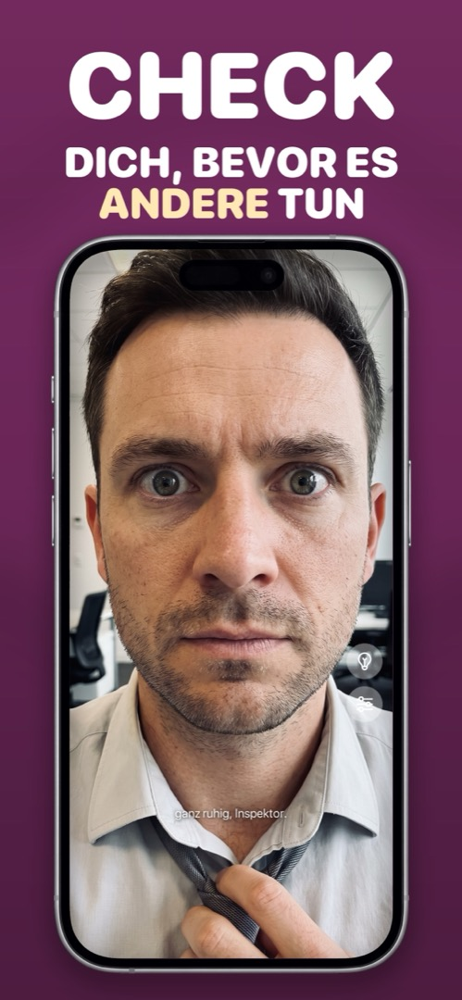

Warum spiegelt die iPhone-Frontkamera dein Gesicht?
Du richtest ein Selfie ein, in der Vorschau sieht alles normal aus — und das gespeicherte Foto wirkt seltsam: der Scheitel auf der anderen Seite, das Gesicht irgendwie weniger du. Nichts ist kaputt. Hier ist, was passiert und was du tun kannst.
Vorschau = Spiegel. Gespeichertes Foto = so sehen dich andere.
Während du ein Selfie einrichtest, spiegelt iOS die Vorschau, damit es sich wie ein Blick in den Spiegel anfühlt — rechte Hand bewegen, und die Hand rechts bewegt sich. Sobald du auslöst, wird das Foto aber ungespiegelt gespeichert, so wie dich jemand sieht, der dir gegenübersteht.
Warum sich das falsch anfühlt, ist gut erforscht: der Mere-Exposure-Effekt. Du hast dein gespiegeltes Gesicht dein Leben lang tausendmal am Tag gesehen — für dein Gehirn ist das die „richtige“ Version. Kein Gesicht ist perfekt symmetrisch, also wirkt das ungespiegelte Foto leicht daneben — für dich, und nur für dich. Deine Freunde kennen dich von Fotos.
Die iOS-Einstellung, die das ändert
Seit iOS 14 gibt es einen Schalter: Einstellungen → Kamera → Frontkamera spiegeln. Einschalten, und Selfies werden genau so gespeichert, wie sie in der Vorschau aussehen. Das repariert Fotos. Es löst aber nicht das Grundproblem, die Kamera-App als Spiegel zu nutzen: Der Auslöser liegt weiter unter dem Daumen, vorne gibt es kein Licht, und die Vorschau ist voller Bedienelemente.
Warum eine Spiegel-App immer gespiegelt ist
Eine Spiegel-App hat eine Aufgabe: sich wie Glas verhalten. Es gibt keine „gespeicherte“ Version, die man drehen könnte — du siehst immer das gewohnte Spiegelbild, bei maximaler Helligkeit, mit Zoom und Ringlicht, wenn du sie brauchst. Wenn du dein Aussehen nur prüfen und nicht festhalten willst, ist das das richtige Werkzeug.
So geht's in Mirrorly
In Mirrorly stellt sich die Frage gar nicht, weil nie etwas gespeichert wird. So prüfst du dein Aussehen:
- Mirrorly öffnen. Die Frontkamera geht an, gespiegelt wie echtes Glas, und bleibt so.
- Richten, was gerichtet werden muss — Haare, Kragen, Zähne. Zoom-Regler für Details, Glühbirne in dunklen Räumen.
- App schließen. Es wurde kein Foto gemacht, also wartet auch keine gespiegelte Version in der Mediathek.

Mirrorly gibt es kostenlos zum Ausprobieren im App Store. Ein Vollbild-Spiegel fürs iPhone mit Ringlicht, Zoom und maximaler Helligkeit. Drei kostenlose Checks, danach ein einmaliger Kauf — kein Abo, keine gespeicherten Fotos, kein Konto, keine Werbung.